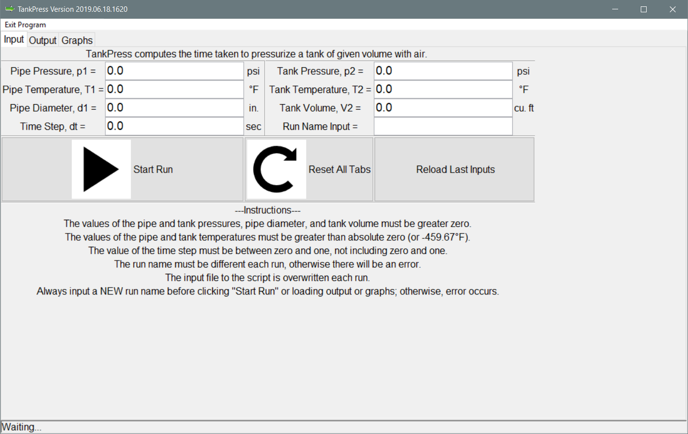
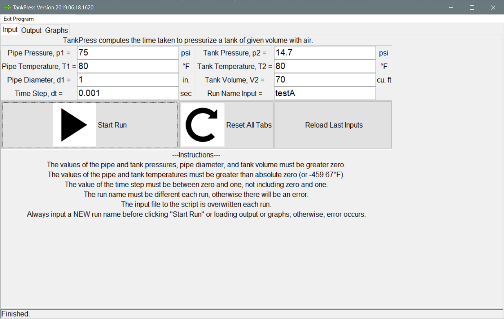
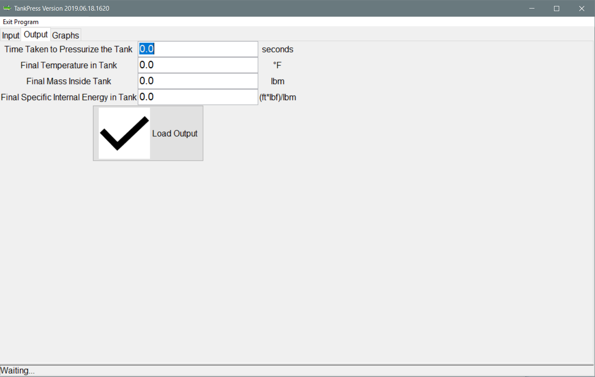
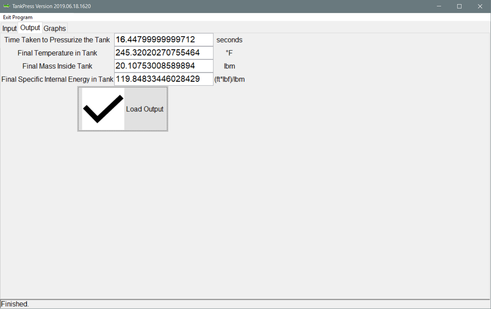
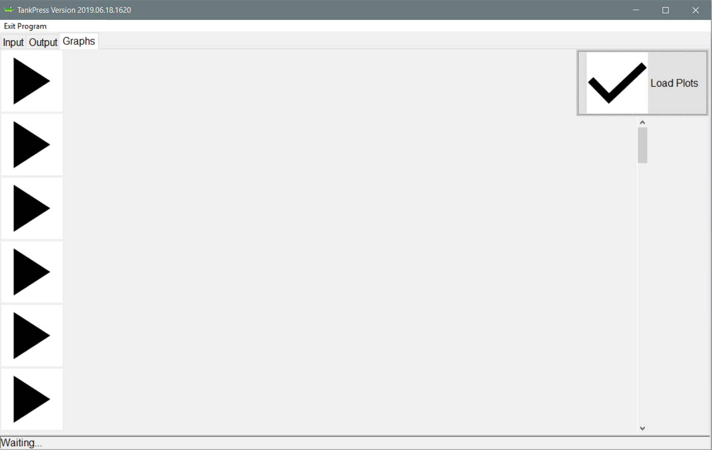
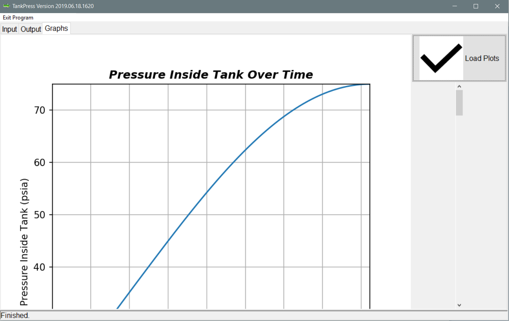
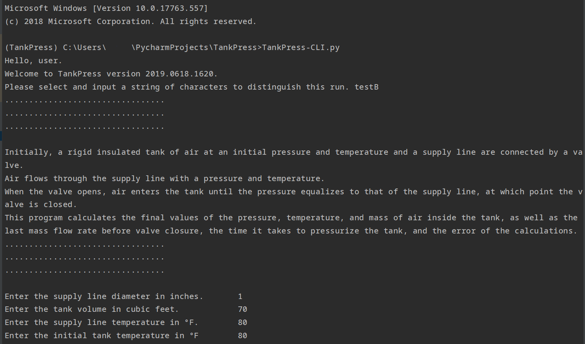
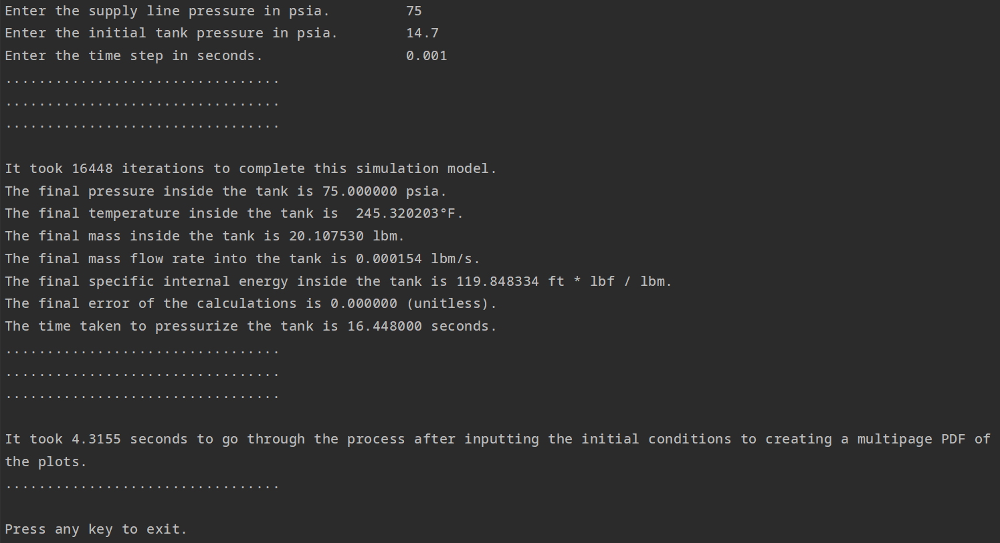

TankPress Manual
Version 2019.06.18.1620
Requirements
| Python 3 |
| matplotlib 2+ (and dependencies) |
| pillow |
Note: To install matplotlib and its dependencies on Windows, run the Command Prompt as Administrator and
enter the following: pip install matplotlib. This will install the most current version of matplotlib and
the required dependencies.
Description
TankPress computes the time taken to pressurize a tank of given volume with air.
It also reports the mass of air, the specific internal energy, and temperature inside the tank.
The air travels from a supply line (pipe) to the tank, with given properties.
Initial Conditions and Constraints
Pipe
| p1 > 0 psi |
| d1 > 0 in. |
| T1 > -459.67 °F |
Tank
| p2 > 0 psi |
| V2 > 0 cu. ft |
| T2 > -459.67 °F |
Time Step
How To Use TankPress (GUI)
(1) Type in the initial conditions (inputs) in the Input tab, including a unique, unused "Run Name".
(2) Click the "Start Run" button (with the Play arrow).
Note: "Waiting..." on status bar will change to "Finished." when the script, TPscript.py, is finished
running.


(3) Click on the "Output" tab.
(4) Click the "Load Output" button.
Note: Shows the final values of T2 (tank temperature), m2 (mass in tank), u2
(specific internal energy in tank), and t (time taken to pressurize tank).


(5) Click the "Graphs" tab; The six graphs generated by the script, TPscript.py, will load. Use the scrollbar to
see
them in turn.
Note: Maximize the window to see any of the graphs on the screen.


(6) Click "Reset All Tabs" button to return the "Input", "Output", and "Graphs" tabs to their pre-run states.
(7) Click on "Reload Last Inputs" button to recall the last inputs to the GUI.
Note: Must put a unique, unused "Run Name" in that input box to do a fresh run with that data.
(8) Click "Exit Program" button on the menu bar when done.
How To Use TankPress (CLI)
(1) Run the TankPress-CLI.py script using the Command Prompt (or terminal) or an IDE such as IDLE.
(2) Follow the prompts on the command line interface to provide the script with the following:
* "Run Name" as a string [ts]
* "Pipe Diameter" in inches [d1]
* "Tank Volume" in cubic feet [V2]
* "Pipe Temperature" in °F [T1]
* "Tank Temperature" in °F [T2]
* "Pipe Pressure" in psi [p1]
* "Tank Pressure" in psi [p2]
* "Time Step" in seconds [dt]
(3) If there are any errors in any inputs, the program will provide a statement of what went wrong and
ask for that input again. If an error happens with the pressures, both will be asked for again.
(4) Once the program finishes running, the Command Prompt will display some information, including the
results.
Note: All outputs are stored in a folder under the current directory (the folder the program is run from).
This includes a log file of the command prompt interactions in a "Log" folder, two csv files in a "Data" folder, and a
"Figures" folder, with sub-folders "eps" and "png" corresponding to those image file types of 6 different graphs.
(5) Press any button to exit the program.
Note: DO NOT FORGET to check the "TankPress-[ts]" folder of the run for all outputs of the run.


Project Folder Structure
./
HTMLimg/
TankPressInputScreen.png
TankPressInputScrAfter.png
TankPressOutputScreen.png
TankPressOutputScrAfter.png
TankPressGraphScreen.png
TankPressGraphScrAfter.png
TankPressCLIfirstscreen.png
TankPressCLIlastscreen.png
GUIfile/
Run.png
Reset.png
Reload.png
Yes.png
run_program.ico
TankPressInput/
TankPressInput.csv
TankPress-[ts]/
Data/
TankPress-[ts]-full.csv
TankPress-[ts]-select.csv
TankPressResults.csv
Figures/
eps/
P2-Time-Rel-[ts].eps
T2-Time-Rel-[ts].eps
P2-T2-Rel-[ts].eps
M2-Time-Rel-[ts].eps
MFR-Time-Rel-[ts].eps
INTNRG-Time-Rel-[ts].eps
png/
P2-Time-Rel-[ts].png
T2-Time-Rel-[ts].png
P2-T2-Rel-[ts].png
M2-Time-Rel-[ts].png
MFR-Time-Rel-[ts].png
INTNRG-Time-Rel-[ts].png
venv/... (For PyCharm)
.idea/... (For PyCharm)
TankPress.py
TankPress-CLI.py
TPscript.py
README
Manual.html
TankPress Manual.pdf
Note: [ts] denotes the "Run Name" provided to the GUI.
History
This was born out of a Thermodynamics II project to essentially create a program to determine the time it takes to
pressurize a tank of given volume with air. First, the algorithm was done in MATLAB. This resulted in a good grade
because it did get the time taken to pressurize the tank, but I was not satisfied. After graduating, I decided to
revamp the algorithm into another language. First, I explored C. It hit me that Python had all the things I needed to
get to where I wanted to go. I began this as a command-line program in Python. I aspired to get it into a GUI. Now it
is.
Version 0.0: 28 Mar 2017, CLI working nicely.
Version 1.0: 18 Jun 2019, GUI program and script finally satisfactory, with room for some improvements. Last
Version of CLI program file also included.